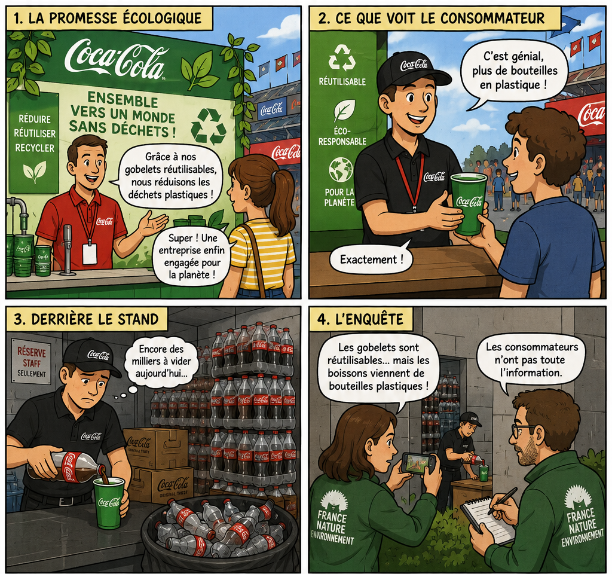

Terminale STMG — MSDGN
3.1 · Les organisations peuvent-elles s’affranchir des questions de société ?
3.1. Les organisations peuvent-elles s'affranchir des questions de société ?
Support de cours et d'entraînement - version élève
Capacité visée
Préciser les enjeux éthiques de l'activité d'une organisation, d'une entreprise.
Notions associées au programme
Éthique ; déontologie ; éthique dans les affaires ; éthique dans les organisations non gouvernementales, gouvernementales et territoriales ; normalisation comptable ; information financière ; transparence ; lutte contre les discriminations ; égalité femmes-hommes ; organisation civique ; mécénat ; démocratie participative.
Notion complémentaire au programme
Greenwashing (écoblanchiment). Cette notion sera construite à partir de l'activité d'ouverture et réutilisée dans l'entraînement.
Problématique :
Les organisations peuvent-elles s'affranchir des questions de société ?
Sommaire du chapitre
Réponses sauvegardées sur cet appareil
Pour commencer - Que peut-on croire ?

Observez les quatre vignettes avant de répondre.
1.
Relevez les éléments qui donnent au consommateur l'image d'une entreprise respectueuse de l'environnement.
Corrigé / aide
La communication insiste sur les gobelets réutilisables, la réduction des déchets plastiques, le recyclage et l'idée d'une entreprise engagée pour l'environnement.
Ces éléments construisent une image favorable de l'entreprise sur le plan environnemental.
2.
Comparez cette communication avec ce qui est montré « derrière le stand ».
Corrigé / aide
La communication met en avant la diminution des déchets plastiques grâce aux gobelets réutilisables.
En coulisses, les boissons utilisées pour remplir ces gobelets proviennent encore de nombreuses bouteilles en plastique : une partie des pratiques reste donc invisible pour le consommateur.
3.
Formulez le problème que cette situation peut poser aux consommateurs et à l'entreprise.
Corrigé / aide
Cette situation pose la question de la sincérité et de la précision de la communication environnementale.
Le consommateur peut croire que l'usage du plastique a fortement diminué alors qu'une part importante demeure cachée. Il existe donc un risque de greenwashing.
I. Pourquoi l'activité d'une entreprise soulève-t-elle des enjeux éthiques ?
Dossier 1 - NaturaBaby
Document 1 - Présentation de NaturaBaby
NaturaBaby conçoit et commercialise des couches, lingettes et produits d'hygiène pour jeunes enfants. L'entreprise emploie 164 salariés et réalise l'essentiel de ses ventes en France, mais elle exporte aussi vers la Belgique et l'Espagne. Depuis 2024, elle met en avant une stratégie de « fabrication plus locale » : l'assemblage final est réalisé dans son usine de l'Ouest de la France, tandis que certaines matières premières restent importées. Le coût des matières représente près de 40 % du prix de revient d'un paquet de couches, ce qui conduit l'entreprise à suivre de près les prix de la cellulose, des emballages et du transport.
Les enquêtes clients montrent que le prix et la sécurité du produit restent les deux premiers critères d'achat. Toutefois, 61 % des répondants déclarent également regarder l'origine des matières et les engagements environnementaux de la marque. Pour accompagner sa croissance, NaturaBaby prévoit d'agrandir son entrepôt logistique et d'automatiser une partie du conditionnement. Elle souhaite parallèlement renforcer ses partenariats avec des structures locales.
Document 2 - Un partenariat avec un ESAT
Depuis deux ans, NaturaBaby confie une partie de la préparation de coffrets promotionnels à l'ESAT Les Ateliers du Parc. Chaque semaine, une équipe de travailleurs en situation de handicap réalise le pliage des boîtes, l'insertion de notices et la constitution de lots destinés aux pharmacies partenaires. Le contrat représente environ 900 heures de travail par mois. Les responsables de l'ESAT insistent sur la stabilité des commandes, qui permet de mieux organiser l'accompagnement des travailleurs.
Pour NaturaBaby, le partenariat présente aussi un intérêt opérationnel : il permet d'absorber certains pics d'activité sans recruter de personnel temporaire. L'entreprise a cependant dû modifier ses procédures de contrôle qualité et adapter les délais de livraison. Le responsable industriel précise que le partenariat n'a pas vocation à remplacer les emplois existants dans l'usine. Dans sa communication, NaturaBaby présente cette coopération comme l'un de ses engagements en faveur de l'inclusion.
Document 3 - Approvisionnement, environnement et communication
Les couches jetables utilisent notamment de la cellulose, des matières plastiques, des colles et différents composants absorbants. NaturaBaby a rejoint un programme de relocalisation d'une partie de son approvisionnement en cellulose afin de réduire la distance parcourue par cette matière et de sécuriser ses achats. Le fournisseur retenu s'engage à utiliser du bois provenant de forêts gérées selon un cahier des charges défini et à financer des opérations de replantation.
L'entreprise a également remplacé certains emballages par des formats contenant moins de plastique. Elle reconnaît toutefois que ses produits restent majoritairement à usage unique et que leur fin de vie demeure un enjeu important. À l'occasion du « Vendredi solidaire », NaturaBaby reverse une partie du chiffre d'affaires réalisé sur son site à une association de protection de l'enfance. Sur les réseaux sociaux, la marque met en avant ces initiatives sous le slogan : « Prendre soin des bébés aujourd'hui, préserver leur monde demain. »
4.
Repérez dans les documents les actions qui peuvent traduire la prise en compte de préoccupations sociales ou environnementales.
Corrigé / aide
Actions à retenir : partenariat avec un ESAT ; relocalisation d'une partie de l'approvisionnement en cellulose ; recours à du bois géré selon un cahier des charges ; financement de replantations ; réduction du plastique de certains emballages ; soutien financier à une association.
Des informations comme l'automatisation ou le suivi du coût des matières ne répondent pas directement à la question : elles doivent être écartées.
5.
Identifiez les principales parties prenantes concernées par ces actions et précisez une attente de chacune d'elles.
Corrigé / aide
Travailleurs de l'ESAT : accès à une activité professionnelle et stabilité des commandes.
Clients : sécurité, prix, origine des matières et crédibilité des engagements.
Salariés : pérennité de l'emploi et conditions d'organisation du travail.
Fournisseurs : relation durable et sécurisation des achats.
Association soutenue : financement de ses actions.
6.
Montrez que les décisions de NaturaBaby font apparaître plusieurs enjeux éthiques.
Corrigé / aide
Les décisions de NaturaBaby font apparaître plusieurs enjeux éthiques : inclusion de personnes en situation de handicap, réduction de certains impacts environnementaux, choix d'approvisionnement, soutien à une association et sincérité de la communication.
L'entreprise doit arbitrer entre ses contraintes économiques et les attentes de ses différentes parties prenantes.
7.
Proposez deux éléments qu'un consommateur devrait vérifier avant de considérer comme crédibles les engagements affichés par une entreprise.
Corrigé / aide
Le consommateur peut vérifier l'existence d'indicateurs mesurables, le périmètre exact de la promesse, les sources ou certifications, l'évolution dans le temps et la cohérence entre la communication et les pratiques principales de l'entreprise.
Il peut aussi rechercher les informations laissées de côté, par exemple les impacts liés à la fabrication ou à la fin de vie.
II. L'éthique concerne-t-elle seulement les entreprises ?
Dossier 2 - Commune de Riveclaire
Document 4 - Une décision publique sensible
La commune de Riveclaire, 28 000 habitants, prépare la transformation d'un ancien terrain industriel en quartier mixte comprenant logements, commerces et espaces verts. Le projet doit être attribué à l'issue d'une procédure mettant en concurrence plusieurs promoteurs. Une adjointe au maire chargée de l'urbanisme participe aux réunions préparatoires et reçoit les dossiers des candidats.
Quelques semaines avant la décision, l'un des promoteurs l'invite avec son conjoint à un match dans une loge d'entreprise. L'élue estime qu'elle restera parfaitement objective et souligne que l'invitation n'a pas de valeur pour la commune. Un autre élu lui rappelle cependant que la charte de l'élu local insiste sur l'impartialité, la probité et la prévention des conflits d'intérêts. La collectivité dispose par ailleurs d'un référent déontologue que les élus peuvent consulter de manière confidentielle afin d'obtenir un conseil sur leurs obligations. Le conseil municipal doit également rendre publics plusieurs éléments relatifs à la procédure et motiver la décision finale.
8.
Repérez les éléments de la situation susceptibles de mettre en doute l'impartialité de la décision.
Corrigé / aide
L'adjointe participe directement à la procédure et reçoit une invitation d'un promoteur candidat quelques semaines avant la décision.
Même sans influence réelle, cette invitation peut créer une apparence de conflit d'intérêts et fragiliser la confiance dans l'impartialité de la décision.
9.
Expliquez le rôle que peut jouer le référent déontologue dans cette situation.
Corrigé / aide
Le référent déontologue conseille l'élue de manière confidentielle sur ses obligations et sur la conduite à adopter.
Il contribue à prévenir les conflits d'intérêts et à sécuriser la décision.
10.
Proposez une conduite permettant à l'élue de préserver l'impartialité de la décision et justifiez votre réponse.
Corrigé / aide
L'élue devrait refuser l'invitation, signaler la situation et consulter le référent déontologue.
Selon les circonstances, elle peut aussi se retirer de certaines étapes de la décision afin de préserver l'impartialité réelle de la procédure et la confiance des citoyens.
Éthique
Déontologie
Interroge ce qui est responsable ou acceptable dans une situation.
Formalise des règles de conduite liées à une profession ou une fonction.
Nécessite un jugement et une argumentation.
Fournit des repères plus directement opérationnels.
III. Pourquoi la transparence de l'information est-elle importante ?
Dossier 3 - Horizon Solidaire
Document 5 - Une communication financière attractive
L'association Horizon Solidaire collecte des dons pour financer des actions d'aide alimentaire et d'accompagnement scolaire. En 2025, elle a reçu 500 000 € de dons et subventions privées. Son rapport annuel affirme : « 90 % de nos dépenses servent directement la cause ». Cette formule apparaît sur la page d'accueil du site et dans la campagne de collecte de fin d'année.
Les comptes certifiés font apparaître les dépenses suivantes : 265 000 € pour les actions menées directement auprès des bénéficiaires ; 78 000 € versés à des associations partenaires ; 54 000 € pour la collecte de fonds ; 46 000 € pour la communication ; 42 000 € pour l'administration et les locaux ; 15 000 € pour la formation des bénévoles. L'association considère que les dépenses de communication et de collecte « servent aussi la cause » puisqu'elles permettent de recueillir davantage de dons. Le rapport ne précise pas la méthode utilisée pour calculer le pourcentage de 90 %.
Catégorie de dépenses
Montant
Actions directes auprès des bénéficiaires
265 000 €
Soutien à des associations partenaires
78 000 €
Collecte de fonds
54 000 €
Communication
46 000 €
Administration et locaux
42 000 €
Formation des bénévoles
15 000 €
Document 6 - Règles communes et transparence
La normalisation comptable repose sur des règles communes d'enregistrement et de présentation des opérations. Elle vise notamment à rendre les informations plus comparables d'une période à l'autre et entre organisations. Une information financière utile doit cependant rester compréhensible et présenter les éléments nécessaires à l'interprétation des comptes. Des données exactes peuvent donc être insuffisantes si leur présentation conduit le lecteur à une conclusion trompeuse ou si la méthode de calcul n'est pas explicitée.
11.
Calculez : a) la part des dépenses consacrée directement aux actions menées auprès des bénéficiaires ; b) cette part en ajoutant les sommes versées aux associations partenaires.
Corrigé / aide
a) 265 000 / 500 000 = 0,53, soit 53 %.
b) (265 000 + 78 000) / 500 000 = 343 000 / 500 000 = 0,686, soit 68,6 %.
Le résultat dépend donc du périmètre retenu pour définir les dépenses qui « servent directement la cause ».
12.
Expliquez pourquoi l'affirmation « 90 % de nos dépenses servent directement la cause » doit être interprétée avec prudence.
Corrigé / aide
Le pourcentage de 90 % n'est pas expliqué : l'association ne précise pas les catégories incluses dans son calcul.
Les comptes peuvent être exacts tout en étant présentés de manière trop globale. Les calculs de 53 % et 68,6 % montrent que la méthode de calcul est indispensable pour interpréter la communication.
13.
Proposez deux informations supplémentaires qui permettraient aux donateurs de mieux apprécier l'utilisation des fonds.
Corrigé / aide
On pourrait demander la méthode exacte de calcul du ratio de 90 %, une ventilation plus détaillée des dépenses, une comparaison sur plusieurs années ou encore des indicateurs montrant les résultats obtenus auprès des bénéficiaires.
Ces informations permettraient aux donateurs de mieux comprendre l'utilisation réelle des fonds.
IV. Les écarts entre salariés prouvent-ils toujours l'existence d'une discrimination ?
Dossier 4 - Clair&Net
Document 7 - Contexte social
Clair&Net emploie 180 salariés dans des activités de nettoyage professionnel et de maintenance légère. L'entreprise a connu une croissance rapide et a recruté 38 personnes au cours des deux dernières années. La direction souhaite préparer son prochain plan d'action en matière d'égalité professionnelle. Elle dispose de plusieurs indicateurs, mais aucun diagnostic approfondi des causes n'a encore été réalisé. Les responsables de site expliquent que certains postes de cadre nécessitent des horaires décalés et des déplacements fréquents ; les représentants du personnel demandent toutefois que l'entreprise vérifie si ces contraintes sont réellement indispensables pour tous les postes concernés.
Indicateur
Femmes
Hommes
Part dans l'effectif total
58 %
42 %
Part parmi les cadres
25 %
75 %
Part des recrutements récents
55 %
45 %
Accès aux formations longues
30 %
70 %
Salaire moyen des cadres
3 420 €
3 800 €
Temps partiel
28 %
8 %
Ancienneté moyenne
7,1 ans
6,8 ans
Document 8 - Interpréter les écarts
Un écart statistique peut signaler une situation à examiner, mais il ne suffit pas à lui seul à établir l'existence d'une discrimination. Il faut notamment comparer des situations comparables, rechercher les critères utilisés pour les décisions de recrutement, de rémunération, de promotion ou de formation, et vérifier si les différences observées reposent sur des éléments professionnels objectifs.
14.
Comparez la place des femmes dans l'effectif, parmi les cadres, dans l'accès aux formations longues et dans les rémunérations. Repérez les écarts qui vous paraissent significatifs.
Corrigé / aide
Les femmes représentent 58 % de l'effectif mais seulement 25 % des cadres. Elles ne représentent que 30 % des bénéficiaires des formations longues. Le salaire moyen des femmes cadres est de 3 420 € contre 3 800 € pour les hommes cadres. Le temps partiel est aussi beaucoup plus fréquent chez les femmes (28 % contre 8 %).
Ces écarts sont significatifs et méritent une analyse, sans permettre à eux seuls de conclure à une discrimination.
15.
Expliquez pourquoi ces données ne suffisent pas, à elles seules, à prouver l'existence d'une discrimination.
Corrigé / aide
Un écart statistique indique une situation à examiner mais ne révèle pas automatiquement sa cause.
Il faut comparer des situations comparables et étudier les critères de promotion, de rémunération, de formation, les fonctions occupées, l'expérience ou le temps de travail avant de conclure.
16.
Proposez deux mesures permettant de réduire l'un des écarts observés et indiquez un indicateur permettant d'en suivre l'évolution.
Corrigé / aide
Mesures possibles : formaliser les critères de promotion et de formation ; analyser et corriger les écarts de rémunération injustifiés ; développer l'accès des femmes aux parcours menant aux postes de cadre ; suivre les décisions de retour de congé ou de temps partiel.
Indicateurs possibles : part des femmes parmi les cadres, taux d'accès aux formations longues, écart de rémunération à situation comparable, part des promotions par sexe.
V. Une organisation peut-elle agir au-delà de son activité principale ?
Dossier 5 - Ybora Transports et la ville de Belrive
Document 9 - Trois formes d'engagement territorial
Ybora Transports exploite des lignes d'autocars interurbains et emploie 95 salariés. L'entreprise souhaite renforcer son ancrage territorial. Elle finance 12 000 € par an le club de handball local ; en contrepartie, son logo figure sur les maillots, les panneaux du gymnase et les affiches des matchs. Elle met également gratuitement deux autocars à disposition d'une association qui organise des sorties culturelles pour des adolescents en situation de handicap. Les conducteurs volontaires effectuent ces trajets sur leur temps de travail, sans facturation à l'association.
Enfin, le service informatique de l'entreprise accompagne pendant trois jours une banque alimentaire locale afin de sécuriser son système de gestion des dons. Ybora communique sur ces actions dans son rapport annuel, mais ne demande pas d'exclusivité commerciale aux organismes soutenus.
Document 10 - Un budget participatif
La ville de Belrive consacre 250 000 € de son budget d'investissement à un dispositif participatif. Les habitants peuvent proposer des projets d'aménagement : végétalisation d'une cour, pistes cyclables, mobilier urbain ou équipements sportifs. Les services municipaux vérifient d'abord la faisabilité juridique et financière. Les projets retenus sont ensuite présentés sur une plateforme et soumis au vote des habitants. La municipalité s'engage à réaliser les projets arrivés en tête dans la limite de l'enveloppe disponible et publie chaque année l'état d'avancement des réalisations.
17.
Complétez le tableau puis qualifiez les différentes actions menées par Ybora Transports.
Action
Contrepartie commerciale identifiable ?
Nature du soutien
Qualification
12 000 € au club de handball + visibilité du logo
Mise à disposition gratuite de deux autocars
Intervention du service informatique auprès de la banque alimentaire
Corrigé du tableau
Action
Contrepartie commerciale ?
Nature du soutien
Qualification
12 000 € au club + visibilité du logo
Oui, visibilité importante du logo
Soutien financier avec contrepartie publicitaire
Parrainage / sponsoring
Deux autocars mis gratuitement à disposition
Non
Soutien matériel / en nature
Mécénat en nature
Intervention du service informatique
Non
Mise à disposition de compétences
Mécénat de compétences
18.
Justifiez que certaines actions de Ybora Transports peuvent être qualifiées de mécénat.
Corrigé / aide
La mise à disposition gratuite des autocars constitue un soutien en nature et l'intervention du service informatique un soutien en compétences.
Ces actions bénéficient à des organismes ou activités d'intérêt général et ne donnent pas lieu à une contrepartie commerciale équivalente : elles peuvent donc être qualifiées de mécénat.
19.
Montrez que le dispositif mis en place par la ville de Belrive relève de la démocratie participative.
Corrigé / aide
Les habitants peuvent proposer des projets, les projets faisables sont soumis au vote et la municipalité s'engage à réaliser les projets arrivés en tête dans la limite du budget.
Les citoyens participent donc à la préparation et au choix d'une décision collective : il s'agit d'une démarche de démocratie participative.
VI. Synthèse - Répondez à la question de gestion
Complétez le tableau à partir des dossiers étudiés.
Situation
Parties prenantes
Attentes ou intérêts qui se confrontent
Notion mobilisée
NaturaBaby
Commune de Riveclaire
Horizon Solidaire
Clair&Net
Ybora / Belrive
Proposition de synthèse du tableau
Situation
Parties prenantes
Attentes ou intérêts qui se confrontent
Notion mobilisée
NaturaBaby
Clients, salariés, ESAT, fournisseurs, association
Maîtrise des coûts et efficacité / inclusion / environnement / crédibilité de la communication
Éthique, éthique des affaires, greenwashing
Riveclaire
Élus, citoyens, promoteurs
Relations avec les acteurs économiques / impartialité et confiance
Déontologie
Horizon Solidaire
Donateurs, bénéficiaires, association
Efficacité de la collecte et communication / transparence sur l'utilisation des fonds
Normalisation, information financière, transparence
Clair&Net
Salariés, direction, représentants du personnel
Contraintes de gestion RH / égalité et non-discrimination
Discriminations, égalité femmes-hommes
Ybora / Belrive
Entreprise, associations, club, habitants, collectivité
Visibilité commerciale / contribution à l'intérêt général / participation des citoyens
20.
Montrez, à partir de deux dossiers différents, que les enjeux éthiques ne prennent pas toujours la même forme selon l'organisation étudiée.
Corrigé / aide
Les enjeux éthiques prennent des formes différentes selon l'organisation et la situation. NaturaBaby est confrontée à des enjeux sociaux, environnementaux et de sincérité de la communication ; Riveclaire à l'impartialité d'une décision publique ; Horizon Solidaire à la transparence ; Clair&Net à l'égalité professionnelle ; Ybora et Belrive à la contribution à l'intérêt général et à la participation des citoyens.
Il faut donc partir des faits et des parties prenantes pour préciser l'enjeu éthique propre à chaque cas.
Production longue accompagnée
Préparez votre réponse à partir de la synthèse du chapitre. Répondez clairement à la question, développez plusieurs arguments et illustrez-les avec les organisations étudiées.
21.
Répondez à la question de gestion : « Les organisations peuvent-elles s'affranchir des questions de société ? » Votre réponse doit être argumentée et illustrée par des exemples du dossier.
Corrigé / aide
Réponse possible : les organisations ne peuvent pas totalement s'affranchir des questions de société car leurs décisions affectent de nombreuses parties prenantes et sont jugées au regard de valeurs et d'attentes sociales.
Dans l'entreprise, cela peut concerner l'inclusion, l'environnement ou la sincérité de la communication. Dans les organisations publiques, l'impartialité et la déontologie sont essentielles. Les associations doivent rendre compte de l'utilisation des fonds, tandis que les employeurs doivent prendre en compte l'égalité et la non-discrimination. Enfin, certaines organisations contribuent volontairement à l'intérêt général par le mécénat ou la démocratie participative.
Ces enjeux varient selon les finalités et les situations, mais aucune organisation n'agit indépendamment de la société et de ses parties prenantes.
VII. Entraînement - Cas Horizon Mobilités
Document A - Une promesse environnementale
Horizon Mobilités conçoit et loue des vélos électriques aux entreprises et aux collectivités. La société connaît une croissance rapide et répond à un appel d'offres important lancé par une métropole. Elle souhaite simultanément améliorer son image environnementale et renforcer son attractivité comme employeur. Sa campagne de communication affirme : « La mobilité zéro impact, dès aujourd'hui ». Le site met en avant les émissions évitées lors de l'utilisation des vélos mais ne publie pas d'information sur la fabrication des batteries, leur durée de vie ou leur recyclage.
Document B - Données sociales
Sur 120 salariés, 48 sont des femmes. Elles représentent 50 % des recrutements de l'année, 18 % des cadres et 10 % des salariés ayant reçu une prime individuelle supérieure à 2 000 €. Les critères d'attribution des primes ne sont pas formalisés. La direction précise que les résultats commerciaux individuels sont « largement pris en compte », sans disposer d'une grille commune à tous les services.
Document C - Un projet territorial
Horizon Mobilités propose à la métropole de financer des ateliers de remise en selle pour des publics éloignés de la mobilité. Une association locale recevrait 30 000 € et resterait libre d'organiser les ateliers et de choisir les bénéficiaires. Le logo de l'entreprise apparaîtrait parmi les partenaires du programme, sans exclusivité commerciale.
22.
Montrez que la communication environnementale d'Horizon Mobilités soulève un enjeu éthique.
Corrigé / aide
Horizon Mobilités promet une « mobilité zéro impact » en mettant seulement en avant les émissions évitées pendant l'utilisation des vélos.
Elle ne publie rien sur la fabrication, la durée de vie ou le recyclage des batteries. Le message peut donc exagérer la portée environnementale de l'offre et soulever un risque de greenwashing.
23.
Expliquez ce que les données sociales permettent d'établir et ce qu'elles ne prouvent pas encore.
Corrigé / aide
Les données montrent des écarts : les femmes représentent 40 % de l'effectif, 50 % des recrutements, mais seulement 18 % des cadres et 10 % des bénéficiaires des primes supérieures à 2 000 €.
Elles ne prouvent pas encore une discrimination car les critères d'accès aux postes de cadre et d'attribution des primes ne sont pas suffisamment connus et les situations individuelles ne sont pas comparées.
24.
Qualifiez le projet mené avec l'association et justifiez votre réponse.
Corrigé / aide
Le projet peut être qualifié de mécénat : l'entreprise apporte 30 000 € à une association pour une action d'intérêt général, l'association reste libre de son programme et aucune exclusivité commerciale n'est exigée.
La simple mention du logo parmi les partenaires ne constitue pas ici une contrepartie commerciale équivalente au soutien apporté.
Production longue autonome
Travaillez sans corrigé préalable : sélectionnez les informations pertinentes dans les documents, organisez vos arguments et mobilisez les notions adaptées.
25.
En une quinzaine de lignes, analysez les principaux enjeux éthiques auxquels Horizon Mobilités est confrontée.
Corrigé / aide
Horizon Mobilités est confrontée à plusieurs enjeux éthiques. D'abord, sa communication environnementale promet une « mobilité zéro impact » alors qu'elle ne publie pas d'informations sur la fabrication ou le recyclage des batteries. Le décalage entre la promesse et les preuves disponibles crée un risque de greenwashing.
Ensuite, les données sociales montrent que les femmes sont peu représentées parmi les cadres et parmi les bénéficiaires des primes importantes. Ces écarts doivent être analysés : ils ne prouvent pas automatiquement une discrimination, mais l'absence de critères formalisés pour les primes fragilise la transparence des décisions.
Enfin, le financement d'ateliers de mobilité constitue une contribution à l'intérêt général qui peut relever du mécénat puisque l'association conserve son autonomie et qu'aucune contrepartie commerciale équivalente n'est prévue. L'entreprise doit donc assurer la cohérence entre ses engagements, ses pratiques sociales et sa communication.
Réviser le chapitre
Avant l’évaluation, vérifiez que vous savez…
préciser un enjeu éthique à partir de faits observés dans des documents ;
distinguer éthique et déontologie ;
expliquer comment la normalisation et l’information financière peuvent contribuer à la transparence ;
interpréter des écarts sans conclure trop rapidement à une discrimination ;
identifier une action de mécénat et reconnaître une démarche de démocratie participative ;
repérer un risque de greenwashing en confrontant un discours aux pratiques observables.
🧠
Cartes de révision interactives
Recherchez une notion, ouvrez la correction puis marquez la carte comme révisée.
Réflexion sur ce qui est responsable ou acceptable dans une situation, au regard des valeurs en jeu et des parties prenantes.
N2
Déontologie
Question
Comment la distinguer de l’éthique ?
La déontologie formalise des règles et principes de conduite liés à une profession ou une fonction ; l’éthique suppose un jugement argumenté sur une situation.
N3
Transparence
Question
Pourquoi la normalisation ne suffit-elle pas à elle seule ?
Des règles communes peuvent contribuer à une information comparable et fiable, mais le périmètre, la présentation et les explications restent déterminants pour permettre aux parties prenantes d’interpréter les données.
N4
Mécénat
Question
Quel critère permet de le distinguer d’une opération commerciale ?
Il s’agit d’un soutien à une activité d’intérêt général sans contrepartie commerciale équivalente.
N5
Démocratie participative
Question
Quel est son principe ?
Associer les citoyens ou les usagers à la préparation, à la discussion ou au choix de décisions collectives.
2
Raisonnement
Les distinctions qui évitent les contresens.
R1
Greenwashing
Question
Quel raisonnement faut-il appliquer ?
Confrontez la promesse environnementale aux faits, aux preuves disponibles et aux informations laissées de côté.
R2
Écart et discrimination
Question
Un écart statistique suffit-il à prouver une discrimination ?
Non. Il signale une situation à analyser. Il faut comparer des situations comparables et rechercher les critères ayant conduit aux décisions.
3
Méthode
Passer des faits à l’enjeu éthique.
M1
Préciser un enjeu éthique
Question
Quels éléments faut-il relier ?
Partez des faits, identifiez les parties prenantes et leurs attentes, puis mettez en évidence la tension, la valeur ou la préoccupation qui rend la décision discutable.